Hey, Samy here ! I'm 23 and I'm a young graduate engineer in Computer Graphics. I worked at Epic Games, on Fortnite.
I love art, cinema, animation, 3D programming and create beautiful pictures.
Here, you can find visuals of my personal projects.
Game projects made with Unreal Engine 4
Yozora demo
Here is probably my biggest personal projects: Yozora demo.
This is an Unreal Engine 4 C++ project I did myself. You can download it and try it yourself from here.
I have modelled, skinned, textured the main character, written all the game mechanics of the character and AI in C++, setting up a targetting system inspired by Dark Souls / Bloodborne (or even Kingdom Hearts), setting up the Animation Blueprints, work on sounds, agencing the test map level design and all the UI work and bindings.
The main gameplay feature is the use of "Basic Hits" and "Special Hits", which are 2 different types of attack. Special Hit are not available at start, and are unlocked when the player is doing combo and is increasing its Hit Counter.
When Hit Counter reach a multiple of 2, level 1 Special Hit is increased by 1 and damages are multiplied; when Hit Counter reach a multiple of 4, level 2 Special Hit increased by 1 and damages are multiplied; when Hit Counter reach a multiple of 6, level 3 Special Hit increased by 1, and damages are multiplied.
Enemies can usually be damaged only by a predefinied Special Hits level, this is the interest of this mechanic. For example, if an enemy can be damaged by a level 2 Special Hit, the player can only use its limited
level 2 or higher Special Hits. Lower Hits with result in no damage but will still increase Hit Counter so Special Hits could still be unlocked using the previous-described method. Special Hits are ressources, like ammo in a shooter game ! But you'll have to play well to unlock them.
In order to always keep the player focused and in the action, there is another way of increasing the Hit Counter.
When enemy is attacking, the player can try to block this attack, and the blocking is performed during the correct timing, Hit Counter will increase !
The character
First, the movements are "futuristic" movements based on a teleportation look. By teleportation look, I mean a sudden dash in a direction with trail and the character turning invisible to create kind of a speed effect.
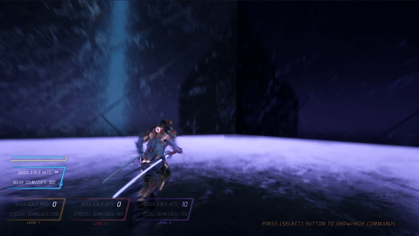
This requires to cast a ray each time the player request to "Dash" or a "Dodge" (which is working on the same principle).
For example, the dodge implies maths calculation like doing the dot product between the normalized velocity vector and the direction vector, determined by the player's input.
If input direction vector has a greater value on the actor's forward vector than on its right vector, that means the player wants to move along the character's X-axis.
If input indicates a forward direction and the scalar product described before is positive, that means dodge should be a forward dodge. If scalar product is negative, then it's a backward dodge.
And the same process goes for right and left dodge.
This is only an example of one feature for the character, and the sample of code is available on my GitHub.
The combat system constently switched between 2 types of attacks, doing 2 differents sequences of actions based on the player input.
One thing I tried to take a special care of is the "feeling" when player is attacking.
Indeed, when attacking the is slown down by reduced the time dilation of the Unreal world. During this short window of time, I add the impact effect on the enemy, a particle system following the direction of the blade and trails to the whole character body so we can feel our character is very powerful.
(I think I was inspired by fighting games, especially "Street Fighter 4" because I remembered being surprising of this split second of freeze when a character hitted or was hitted. Anyway...).
The same kind of system is set up when blocking an attack. If an attack is block, the camera is offsetted, the time is slowed and a particle system spawns, showing the impact.
The aspect is inspired by the "Homo ludens" from Kojima Productions, by the character of Emile in the game "Halo: Reach" and by diverse cyberpunk art. 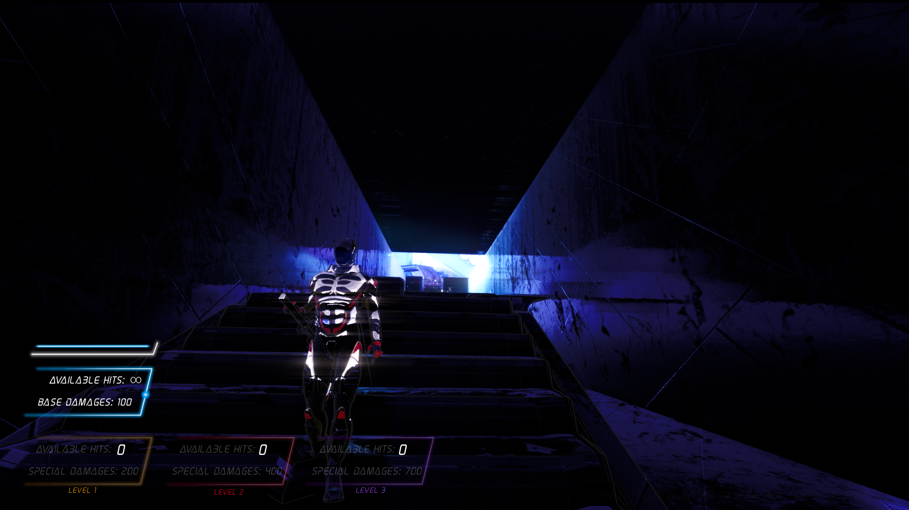
Enemy's AI
The main enemy type is a soldier enemy. The logic is once again fully wirtten in C++.
This AI (or more precisely the AI Controller class) is using Unreal's Perception component to detect the player within a range I fixed.
If the player is not detected, then AI will move between points inside the nav mesh.
As soon the player is detected, a stimuli is sent to the Perception component of the AI Controller and the AI is ready to fight. I set the AI's Rotation matrix to always face the player (so yes, each tick). Then, if the player is far, then AI will fire a projectile.
But the player will have to come closer. If the distance between AI and player is under a treshold, then I use a random int variable to choose what action to do next: 1/5 to fire a projectile and 4/5 to do a physical attack. Again, there 4 different physical attack and the selected one is determined by the random int variable.
If the player runs away, the stimuli is lost but the last known position of the player is registered. The AI will go to this location and if there is no new stimuli, then the AI will go back to its initial points (yes, this part needs a big improvement but it was okay for my purpose).
The look I was looking for for the AI basic solider is a soldier fed by a lot of wires coming from everywhere, very inspired by Akira or Ghost in the Shell but I can't really reach what I wanted so I made a little structure made of wires in Maya. I skinned, UVed and added this structure to the AI soldier through the Master Pose Component system of Unreal.
This is only for the enemy soldier, not the "Samurai Boss" which has a totally different moveset and logic.
Post Process effects
The main post process effect is the very glowy aspect on lights. It is an anamorphic flare that is exagerated. I really flares in movies for example, so I really wanted to give this aspect to my game.
There is also color correction and color grading.
My thoughts on this project
I could keep working on it, maybe one day. I have few other levels ready, very cyberpunk themed.
Overall, I learned a lot through this personal project. First, the all pipeline artists follow when working in Maya either for modelling or animation, and then sending their work to Unreal.
I could use my C++ skills and I think I made something pretty well optimized, especially with the use of timelines. I think my internship at Epic Games helped me a lot to produce an optimized code.
The overall look is satisfying and I wish I had the time to work on assets I have in mind...or was helped by a real CG artist !
But finally, I think the gameplay is pretty good if you take 15 minutes to understand where I wanted to go.
Indeed, the difficulty can be scaled very easily, by setting the enemy's minimal level of Hits required to beat it or by switching this level in real-time during a fight. Also, the gameplay rewards the player who is active during the fight and has the good timing with parrying.
I think you can always know why you died, and if you are concentrated on timings, you can understand what to do and how to beat enemies. I really wanted to get as close as possible to Dark Souls combat system.
I hope it worked !
Run from the Night
A Cyberpunk prototype
This is an Unreal Engine 4 prototype I made before Yozora, which is mainly done in Blueprints. I decided to try to implement my gameplay ideas through Blueprints before diving into C++.
This is very Cyberpunk influenced, by Ghost in the Shell, Blade Runner and other Akria.
I have made some levels but they are not polished, and the gameplay is outdated.
I am thinking of merging this to Yozora's C++ gameplay one day.
Code T
Code T for temporal
This is a school project made with Unreal Engine 4. Most of the game mechanics are made using Unreal blueprints.
The idea behind the "temporal" is a gameplay idea. The character can switch between times.
There is its original time, in a medieval environment. The player uses a bow to defeat the enemies and reach the end of the level, so arrows are the first ressource. 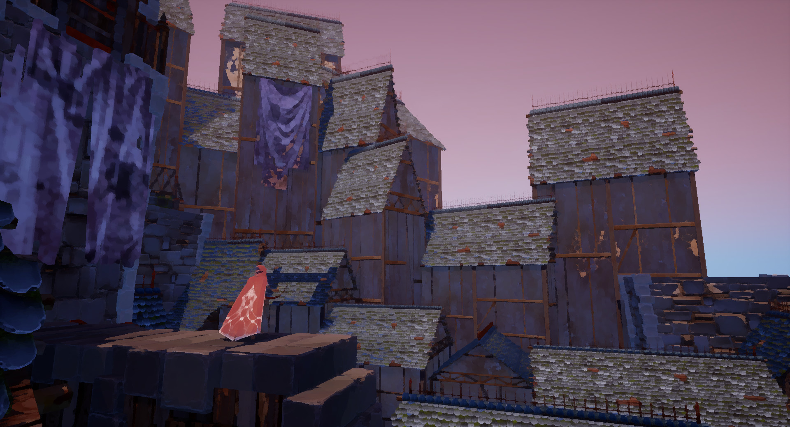
But when the player is facing an obstacle which cannot be passed, it has the ability to go to the future of this exact same environment, at the exact same position, but with a limited time.
The level design is a bit different and the player can continue.
But the time in this future environment is limited to few seconds, so this precious seconds are the second important ressource that shouldn't be wasted.
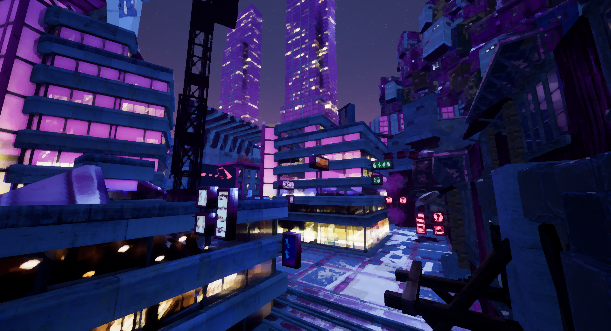
Using Unreal blueprints, we created the bow and its descending trajectory and the time switching mechanics.
Post Process "paint" effect
We decided to give a special appearance to the game by creating a "paint filter" through a post process material.
The principle of this material is, for each pixel, to get the square grid surrounding the pixel (usually a 3*3 or 5*5 grid depending on the effect intensity we are looking for).
Then, we are calculating the mean of all these pixel, which gives us a unique color. Finally, we are applying this color to the initial selected pixel.
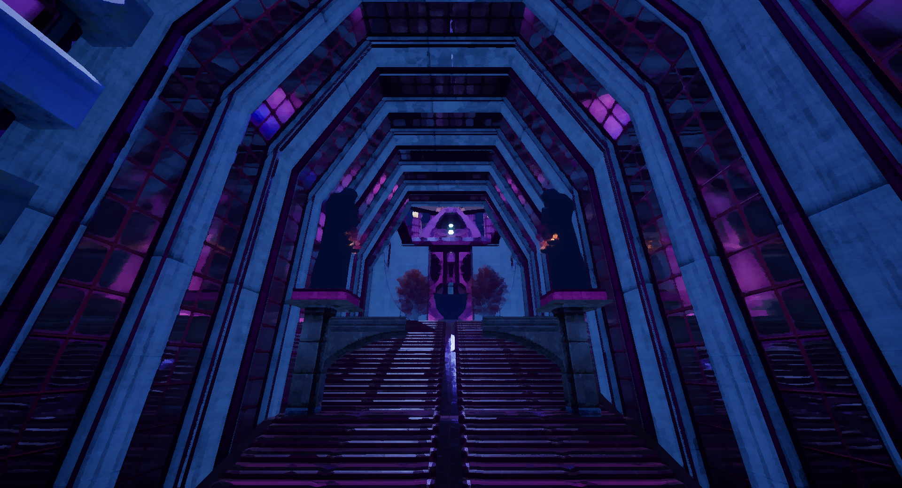
Maya scene creation / Arnold rendering
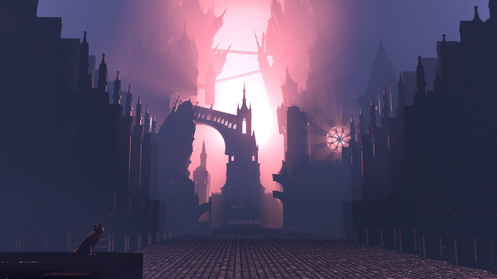
Maya scene "Gigantic nightmare"
Another scene made with Maya.
I hope you can see Lovecraft's influence and Bloodborne inspiration
Small detail but the fox has fur made with Xgen !
I really like to work with shapes and lightings. The compositing, color choice and lightings (with an important work on the lights, volumetric lights and light shafts) are made by me.
This is rendered with Arnold.
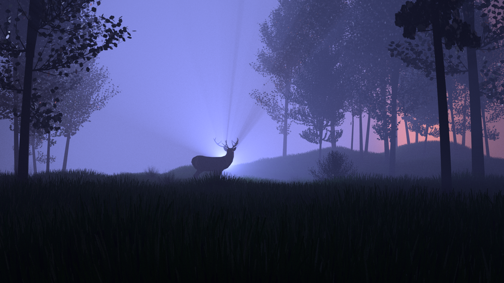
Maya scene "Dreamlike deer"
This is a scene I made in Maya. This is a way to express my artistic vision.
I wanted to create a poetic scene. Grass was generated using Xgen. Again the compositing, color choice, lightings (with an important work on the lights, volumetric lights and light shafts) and texturing are made by me.
This is rendered with Arnold.
"Singularity" - short film made with UE4
"Singularity"
This a short film I made in UE4. The idea came when I wanted to try Quixel Megascans.
Since I started this project during Covid-19 lockdown, I had time to extend a bit the story
but I wanted to be sure to stop working on it when lockdown will end, so I made it in around 3 weeks.
It was really fun to work on it, it is the concept of "Shadow" from the british psychoanalyst Carl Jung, and about accepting it.
I tried to create different atmospheres. I used spline based animation to create the path of the jellyfish.
The camera work is also based on splines and rigs. Destructible ice was made in Maya and imported in UE as an Alembic cache.
With more time and a better GPU, I would have bring Ray tracing, fur for the deer and better animations. I am sorry for the sound design !
This is rendered UE4.24.
1. After Effects tracking / NUKE and Maya compositing
I am a huge cinema fan and my dream has always been to express myself through movie directing. Unfortunately, I can't really do it but as a hobby I tried few things.
First, I took a video sequence made with my iPhone X, shot in 4k at 24 fps.
In After Effects, I have to do the camera tracking which gives me, for each frame of the video, a transform vector of the virtual camera position in a 3D world space.
This tracking is made by generating points of interest in each frame, which are usually points where we can observe a heavy change in the pixel environment, giving us a lot of trackable information.
Then, I did the compositing in Nuke Studio with 3D environment made in Maya. I also used Maya to add the masks on top of the walking person according to the camera track.
Indeed, I made a 3D projection of the video inside of Nuke, I added fake lights (god rays), the 3D models in the background and did the color grading.
You can find more details on the process by scrolling down this page (n°3).
Here is another compositing using the same process.
2. After Effects tracking / Maya compositing
As explaned before, I again took a video sequence made with my iPhone X, shot in 4k at 24 fps.
This timed, I did the compositing in Maya. Indeed, after getting a track from After Effects, I created my 3D camera inside Maya and set my video as a video backgound of this camera so I can see my 3D model in front of my video, with the video filling the camera screen.
I wanted to change my car (trading my old Opel to a brand new red Ferrari, isn't it a cool idea...and it will remain just an idea for a bit probably :( ).
After placing the Ferrari in the Maya's 3D space, I wanted good reflections of this car (like when I see one...on YouTube :( ) so I used a 360° HDRI landscape as an Arnold skydome, close to the environment of the video.
Finally, I did added a green screen behind the car to do Chroma Key on Premiere Pro.
3. After Effects tracking / Unreal Engine 4 compositing
In After Effects, I have to do the camera tracking which gives me, for each frame of the video, a transform vector of the virtual camera position in a 3D world space.
This tracking is made by generating points of interest in each frame, which are usually points where we can observe a heavy change in the pixel environment, giving us a lot of trackable information.
I also created locators on points where I wanted to add a 3D object during compositing, so it will match the movement of the video relatively to the distance to camera.
(The problem comes on video sequences with a lot of camera movements, where the same points can't be tracked on each frame of the video, as they can disapeared with movement.
To solve that, we can use planar tracking solutions but this is not really the subject here.)
My camera track is now ready to export in Cinema4D/Maya, so I have now a 3D camera track on a timeline that I can export as an .fbx.
My idea here was to use Unreal Engine 4 to do compositing and a first render as it's really fast to get a previz video through the Unreal Sequencer.
When importing a camera track in Unreal, we can't import the locators at the same time, so the scale is usually not matching and it's hard to figure out how to perfectly scale them relatively to this new Unreal camera.
The workaround I found is to mesure the distance between camera and locators inside of Maya, and scale them from position (0, 0, 0) in Unreal until the distance is matching the distance calculated in Maya.
This way, I'm sure the scale of my Unreal 3D scene matches the scale of the After Effects 3D scene where the tracking was made.
I can now use compositing tools to place my 3D objects and animations inside Unreal and blend them with the video.
The final edit is made in Premiere Pro where I can do color correction and color grading to give to each sequence its own atmoshpere.
I have worked on a ray tracing algorithm along with a school project, in order to understand how it works and implement it in C++.
The princple of the ray tracing algorithm implemented here is as follows:
We want to cast a light ray (or multiple light rays) per pixel of the screen, in the 3D scene. In the first and most simple version, we are calculating the intersection of a ray with each polygon of each object in the scene.
If an intersection is found, we know where our current ray hitted and we can calculate the intersection of the next ray.
With all those calculations of intersections, we are trying to determinate the color of the pixel. This color is defined by the material applied on the intersected face of the 3D object.
This color is determined by the famous Rendering equation.
Let's take a simple scene with 2 light sources and 2 cubes with a red diffuse material. The diffuse component is calculating as follows:
I(diffuse) = k(d) * I(light) * (n.l)
where:
k(d) = diffuse component of the material
I(light) = light source color
n = polygon's normal (vector)
l = vector between light source and intersection point (vector)
We are sending one ray per pixel, in direct light, no bounce.
This means each light source will either produce a colored pixel if the ray hitted something, or black one, resulting in a shadow.
Since we have 2 light sources in a different position, we can have shades of grey for the shadow.
Here is what we get when applying this principle:
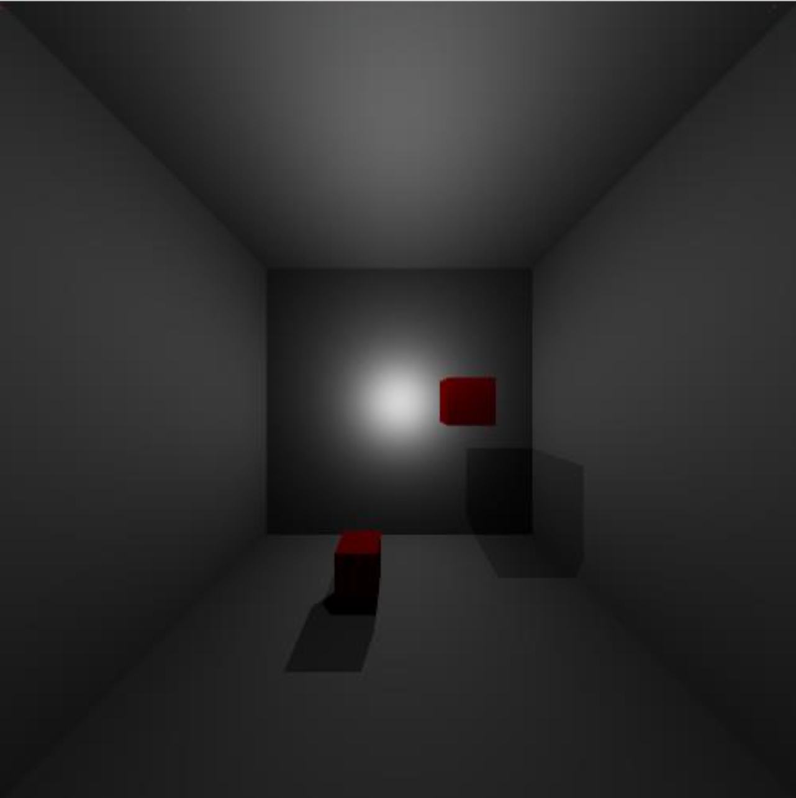
Let's continue by changing the scene a bit: the walls are now mirors (specular component), which implies to work on the specular component. The specular component is calculating as follows:
I(specular) = k(s) * I(light) * ((v.r)^n(shiny))
where:
k(d) = specular component of the material
I(light) = light source color
v = distance between light source and intersection point (vector)
l = relfected ray (vector)
n(shiny) = coefficient of shininess intensity (the visibile reflection on the material)
Specular direct lighting is calculated by doing the scalar product between the incident vector (between light source and impact point on object)
and the reflected vector. Let's make sure we don't have a negative value for this scalar product, so we know we are in the right hemisphere.
In order to get better result, we will now add indirect lighting and start talking about Global illumination: it's the specular reflections in the ideal direction. We are now calculating recursively n bounces for each ray casted per pixel.
Here is the result in the exact same scene:
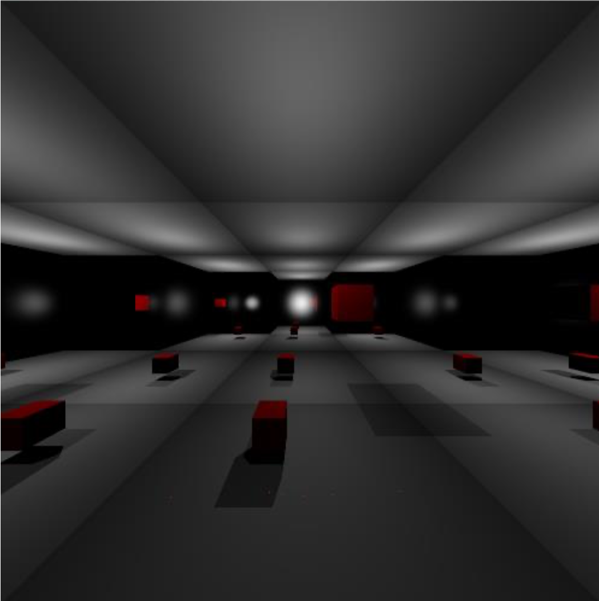
As we are now in Global illumination, we are taking in consideration direct lighting and indirect lighting. We can try to change light sources colors (a cyan and an orange light) to see the contribution of each one in the scene shading. Here is the result:
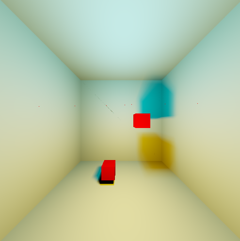
You might now have understand how the algorithm works, so I will skip the work on the others components used in the Rendering equation.
Accelerate calculations with a BVH structure
We can ask ourselves: is there a way to avoid of the intersections calculations since we are interacting with only one polygon of the 3D object ?
Indeed, we have to avoid them because they represent almost 100% of useless calculations.
For this purpose, we can implement a BVH (for Bounding Volume Hierarchy). Instead of casting a ray in the entire bounding box surrounding our scene, let's sudivied the scene first.
We are recursively dividing the 3D space into smaller boxes, until a box contains a little amount of polygons.
Now, when casting a ray, we can simply check in which smaller box it is progressing until it hit something. Since we know the polygons inside a specifique box,
we can calculate only intersection between the ray and these few polygons, and we will find our final intersection.
Let's an example to illustrate that. In a scene containing 22,251 polygons, I tried to calculate a render pass without the BVH structure.
The time needed to render one pass is 350.33 seconds, here is the result:
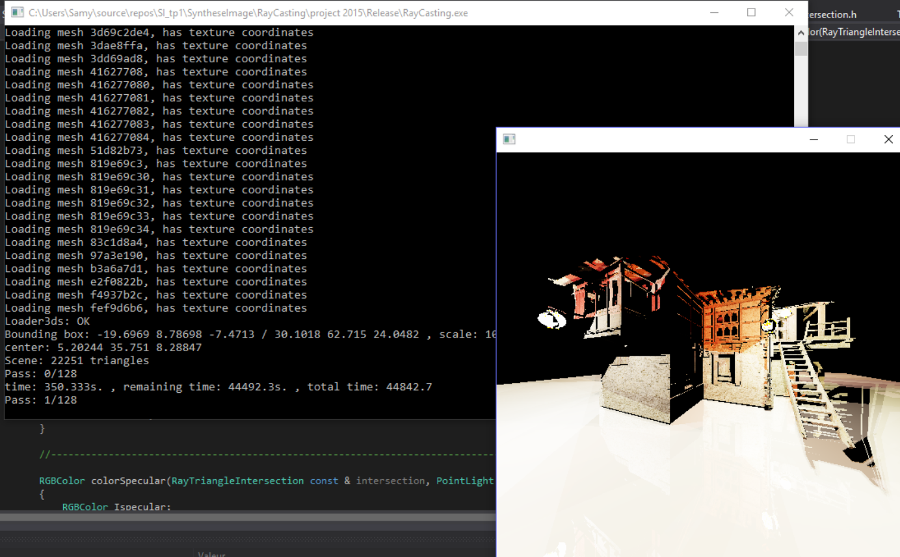
Now, with the BVH structure, the time needed to render one pass is 0.77 second ! We have speed up the process by 450 !
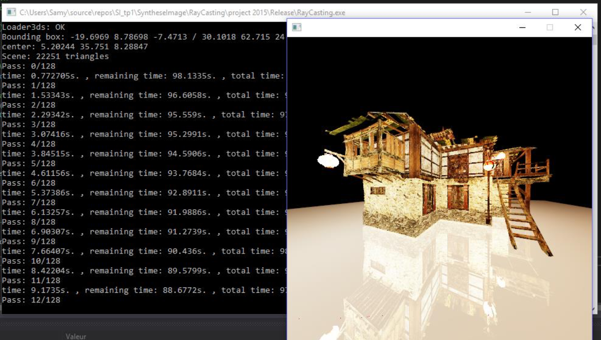